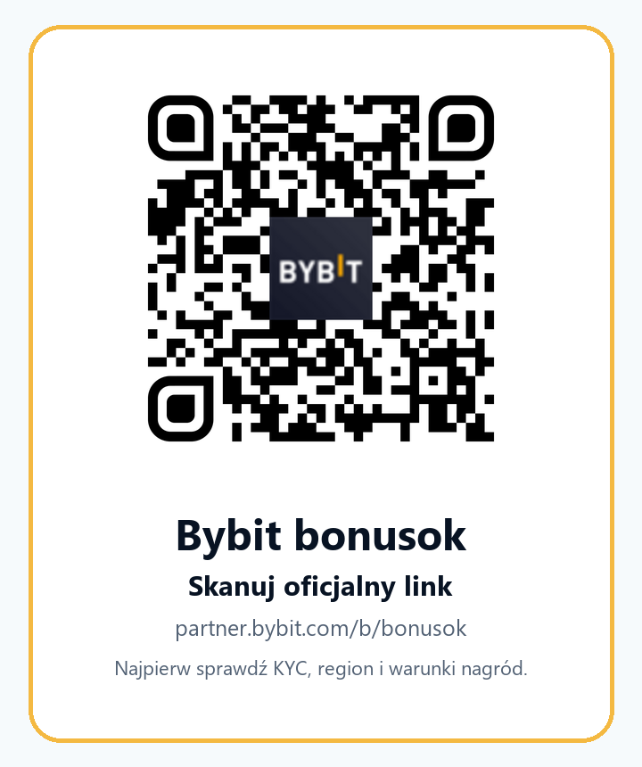

BYBIT BONUSOK POLSKA
Kod polecający Bybit bonusok: kalkulator kosztu spot dla aktywnego tradera
Jeżeli szukasz frazy „kod polecający Bybit”, nie zaczynaj od samego bonusu. Zacznij od pytania, czy pierwsza transakcja spot ma sens po doliczeniu fee, spreadu, slippage, depozytu, KYC i warunków Rewards Hub.
Kalkulator progu opłacalności spot: fee, spread i slippage
Większość stron z kodami polecającymi kończy pracę w momencie, w którym pokazuje kod i duży przycisk. Dla aktywnego tradera to za mało. Jeżeli chcesz wykonać pierwszą transakcję spot na Bybit, szczególnie po depozycie w EUR albo po konwersji stablecoinów, realny koszt nie jest jedną liczbą. Składają się na niego opłaty maker/taker, spread w order booku, poślizg ceny przy zleceniu market, koszt konwersji, ewentualny koszt wypłaty i czas, w którym rynek może ruszyć przeciwko Tobie.
Poniższe narzędzie nie daje sygnału inwestycyjnego. Ma jedno zadanie: pokazać, jaki minimalny ruch ceny musiałby pokryć koszty transakcyjne, zanim zaczniesz mówić o zysku. Używaj konserwatywnych założeń. Jeżeli nie znasz własnej stawki fee, zacznij od poziomu Non-VIP i potem sprawdź realne My Fee Rate po zalogowaniu oraz zakończeniu wymaganej weryfikacji. Jeżeli order book jest płytki, zwiększ spread i slippage. Jeżeli kapitał jest mały, koszt wypłaty potrafi ważyć więcej niż sama opłata spot.
Jak interpretować wynik
Jeżeli próg jest blisko 0,4-0,7%, krótki trade spot nadal wymaga planu, ale koszty nie dominują całej decyzji. Jeżeli próg przekracza 1%, poluj tylko na setupy, których oczekiwany ruch jest wyraźnie większy od kosztów. Jeżeli próg przekracza 2%, albo używasz zbyt małego kapitału wobec kosztu stałego, albo za bardzo polegasz na zleceniu market w płytkim order booku. To jest moment, w którym lepiej zmniejszyć częstotliwość handlu, używać limitów, poczekać na lepszą płynność albo w ogóle zrezygnować z transakcji.
Oficjalny opis fee spot Bybit wyjaśnia różnicę między makerem i takerem oraz podaje wzór na opłatę jako wypełniona ilość pomnożona przez fee rate. Jednocześnie Bybit zaznacza, że rzeczywista stawka zależy od VIP level i regionu, więc zawsze sprawdzaj stawkę w swoim koncie. W kalkulatorze można szybko przetestować wariant pesymistyczny: na przykład kapitał 1000 EUR, 0,10% fee za stronę, 0,16% spreadu, 0,20% slippage, 0,35% kosztu konwersji i 5 EUR kosztu stałego. Jeżeli taki koszyk kosztów daje ponad 1% break-even, nie ma sensu gonić mikro-ruchu tylko dlatego, że przy rejestracji widzisz zadanie w centrum nagród.
Dlaczego nie robimy kolejnej cienkiej strony „kod bonusowy”
Polska wyszukiwarka dla fraz typu „Bybit kod polecający”, „kod polecający Bybit Polska” i „Bybit bonus kod” pokazuje kilka typowych wyników: oficjalne strony Bybit, FAQ programu poleceń, strony kampanii, a obok nich kuponniki z bardzo agresywnymi hasłami o dużych bonusach. Brakuje natomiast odpowiedzi dla użytkownika, który jest już bliżej realnej aktywacji: chce wiedzieć, czy opłaca mu się wykonać pierwszy spot trade, jak sprawdzić kod, jak nie stracić nagrody przez błąd KYC i kiedy bonus nie powinien decydować o wejściu w rynek.
Ten materiał ma dlatego jedną pracę: doprowadzić do kwalifikowanego kliknięcia referral, które ma większą szansę zamienić się w KYC, depozyt i pierwszy rozsądny trade spot. Nie chodzi o klik każdego, kto zobaczy słowo „bonus”. Chodzi o tradera, który rozumie koszt transakcji, umie zatrzymać się przy złych warunkach i nie próbuje obchodzić ograniczeń jurysdykcyjnych. Taki użytkownik jest wartościowszy dla długoterminowego programu partnerskiego niż osoba, która rejestruje się tylko po losowy airdrop, a potem porzuca konto.
Dodatkową przewagą jest język. W polskich wynikach wiele treści brzmi jak automatyczne tłumaczenie albo bezrefleksyjnie miesza globalne Bybit.com, Bybit EU, kartę Bybit, Pay, Rewards Hub i program partnerski. Tutaj rozdzielamy tematy: kod bonusok jest ścieżką referral, ale warunki nagród, prowizje, kwalifikujące depozyty i dostępność produktów sprawdzasz na oficjalnej stronie, na którą trafi Twoje konto. Jeśli coś jest niedostępne dla Twojej jurysdykcji lub KYC, nie próbujesz „naprawić” tego VPN-em.
KYC, Bybit EU, Polska i warunki nagród
Bybit publikuje listę wyłączonych jurysdykcji oraz informuje, że fałszywe przedstawienie lokalizacji lub miejsca zamieszkania może prowadzić do działań na koncie. Polska nie widnieje w tej liście jako wyłączona w sprawdzonym źródle globalnym, ale to nie znaczy, że każdy produkt, kampania lub instrument jest dostępny dla każdego użytkownika z Polski. Dla użytkownika z Europejskiego Obszaru Gospodarczego istotne są również ścieżki Bybit EU i lokalne zasady komunikacji marketingowej. Najbezpieczniejszy skrót myślowy jest prosty: najpierw KYC i realna jurysdykcja, dopiero potem produkt i promocja.
FAQ programu poleceń Bybit EU opisuje, że kwalifikujący się polecony musi zarejestrować konto z linku lub kodu, wykonać depozyt w określonym czasie i spełnić warunek obrotu spot, a pary z zerową opłatą mogą nie liczyć się do wolumenu. Strony kampanii Poland Rewards Rush dodatkowo wskazują, że uczestnicy muszą ukończyć weryfikację i onboarding, a Bybit EU może dyskwalifikować aktywności nieuczciwe, self-referral, wiele kont lub sztuczną aktywność. To dokładnie powód, dla którego na tej stronie nie ma obietnicy „nagroda na pewno będzie”. Jest tylko checklista, jak sprawdzić warunki przed podjęciem ryzyka.
Weryfikacja KYC jest też praktyczna. Oficjalne materiały Bybit o poziomach KYC pokazują, że część usług wymaga individual verification, a Rewards Hub i niektóre produkty mogą być niedostępne bez weryfikacji. Jeśli ktoś chce zostać aktywnym traderem, to KYC nie jest tylko formalnością dla bonusu. To warunek dostępu do większej części infrastruktury: depozytów, wyższych limitów, niektórych kampanii i bardziej stabilnego korzystania z konta. Jeżeli Twoje dokumenty, obywatelstwo, rezydencja podatkowa albo lokalne przepisy powodują ograniczenie, zaakceptuj to i nie obchodź systemu.
Checklista aktywacji z kodem bonusok
- Otwórz oficjalny link partner.bybit.com/b/bonusok i upewnij się, że atrybucja referral/kod bonusok jest widoczna podczas rejestracji.
- Nie twórz drugiego konta, nie używaj self-referral i nie wpisuj danych, których nie możesz potwierdzić dokumentami.
- Po zalogowaniu sprawdź, czy trafiłeś na właściwą ścieżkę Bybit/Bybit EU oraz jakie warunki programu widzi Twoje konto.
- Zakończ wymagane KYC przed depozytem, jeżeli produkt, Rewards Hub albo kampania tego wymagają.
- Otwórz Rewards Hub i zapisz: typ nagrody, termin claim, warunek depozytu, wymagany wolumen, wykluczone pary, czas wypłaty i powody dyskwalifikacji.
- Policz próg opłacalności w kalkulatorze. Jeśli nagroda wymaga wolumenu, porównaj koszt z potencjalną wartością nagrody.
- Wykonaj mały test spot, najlepiej na płynnym rynku. Unikaj pierwszego trade z leverage, jeśli nie potrafisz wyjaśnić likwidacji i funding fee.
- Zapisz historię depozytu, transakcji, fee, screenshot zastosowanego kodu i warunki promocji. Będzie to ważne przy reklamacjach, podatkach i własnym dzienniku.

Produkty Bybit, które mają sens dla aktywnego tradera
Dla tej strony głównym produktem jest spot, bo jego koszt da się jasno policzyć. Bybit komunikuje podstawowe stawki spot dla użytkowników Non-VIP jako 0,1% maker i 0,1% taker, z zastrzeżeniem, że stawki zależą od VIP level i regionu. To wystarczy do pierwszego przybliżenia, ale aktywny trader nie powinien poprzestawać na tabeli. Po każdej transakcji sprawdź trade history, rzeczywiście pobrane fee i fill price. Jeśli różnica między oczekiwanym a wykonanym poziomem jest duża, problemem może być nie tylko fee, ale także spread, slippage albo wybór zlecenia market.
Drugi temat to Rewards Hub. Oficjalne FAQ opisuje różne typy nagród, takie jak bonusy, kupony, fee savers, fee discount czy APY booster, ale też przypomina, że nagrody mają terminy, mogą wygasać i trzeba je odebrać zgodnie z zasadami. W praktyce oznacza to, że trader powinien traktować nagrodę jako dodatek do planu, nie jako powód do overtradingu. Jeżeli zadanie wymaga dużego wolumenu, wpisz ten wolumen do kalkulatora kosztu i policz, czy robienie obrotu dla samego zadania nie niszczy sensu ekonomicznego.
Trzeci temat to infrastruktura dla bardziej zaawansowanych użytkowników. Jeżeli po kilku tygodniach spot tradingu przechodzisz do API, subkont albo automatyzacji, myśl o nich jako o narzędziach kontroli, a nie magicznej przewadze. API powinno mieć minimalne uprawnienia, najlepiej bez prawa wypłaty. Subkonto powinno ograniczać kapitał eksperymentu. Strategia powinna mieć limit straty dziennej, limit liczby zleceń i plan wyłączenia. Strona referral nie powinna udawać, że narzędzia automatyczne produkują zysk. One tylko wykonują reguły - dobre albo złe.
W polskim kontekście dochodzi jeszcze prosty obowiązek porządkowy: prowadź zapisy. Historia transakcji, wpłaty, wypłaty, fee, rewardy, airdropy i konwersje mogą mieć znaczenie podatkowe lub księgowe. Ta strona nie jest poradą podatkową, ale aktywny trader, który od początku zapisuje dane, ma mniej chaosu, gdy konto urośnie. Bonus bez dokumentacji bywa problemem. Dziennik zleceń i kosztów bywa przewagą.
Jak używać kodu bonusok bez FOMO
Najzdrowszy sposób użycia kodu polecającego jest nudny: sprawdzasz, czy kod jest zastosowany, czy konto jest kwalifikowane, czy KYC jest realny, czy produkt jest dostępny, a następnie wykonujesz małą, kontrolowaną transakcję. Jeśli bonus się pojawi, traktujesz go zgodnie z warunkami. Jeśli się nie pojawi, sprawdzasz powód w Rewards Hub lub support, zamiast generować sztuczny wolumen. Jeśli warunki są niejasne, nie zwiększasz depozytu.
Najgorszy sposób to odwrotność: duży depozyt, market order na płytkim rynku, brak kalkulacji kosztu, pogoń za tajemniczym boxem, ignorowanie par z zerową opłatą, kilka kont i próba użycia VPN. Taki użytkownik może nawet chwilowo zwiększyć kliknięcia, ale jest słaby jako referral. Częściej kończy z odrzuconą nagrodą, utratą środków albo porzuconym kontem. Dlatego nasza strona celuje w mniejszą, ale lepszą grupę: osoby, które chcą handlować regularnie, rozumieją koszty i szanują ograniczenia.
Jeśli po tej lekturze nadal chcesz użyć kodu, najprostsza ścieżka jest tutaj: kliknij oficjalny link Bybit bonusok, przejdź rejestrację, sprawdź pole referral, zrób KYC, przeczytaj zadania Rewards Hub, policz koszt i dopiero wtedy wykonaj testową transakcję. Dla bardziej zaawansowanych traderów można potem przejść do spot page z parametrami referral, ale źródłem decyzji pozostaje własny plan, nie hasło promocyjne.
FAQ: kod polecający Bybit bonusok w Polsce
Czy kod bonusok daje gwarantowany bonus?
Nie. Kod pomaga przypisać rejestrację do ścieżki referral, ale nagroda zależy od oficjalnych warunków widocznych dla Twojego konta: KYC, terminu, depozytu, wolumenu, regionu, produktu i zasad antynadużyciowych. Sformułowania „do”, „aż do” lub „up to” zawsze traktuj jako limit warunkowy, nie obietnicę wypłaty.
Czy Polska jest na liście krajów wyłączonych Bybit?
W sprawdzonej globalnej liście Service Restricted Countries Polska nie jest wymieniona jako wyłączona jurysdykcja. Nie oznacza to jednak automatycznej dostępności każdego produktu lub kampanii. Użytkownicy z EOG powinni sprawdzać właściwą ścieżkę Bybit EU, regulaminy kampanii i komunikaty widoczne po zalogowaniu.
Dlaczego kalkulator jest ważniejszy niż wysokość nagrody?
Bo koszt tradingu działa zawsze, a nagroda jest warunkowa. Jeżeli gonisz bonus wolumenem, który generuje większe koszty i ryzyko niż wartość nagrody, program referral nie poprawia Twojej sytuacji. Najpierw policz koszt, potem zdecyduj o rozmiarze pozycji.
Czy mogę użyć VPN, jeśli produkt nie jest dostępny?
Nie. Ta strona nie zachęca do VPN, false-KYC, fałszywego adresu, pożyczonego konta ani obchodzenia ograniczeń. Jeżeli produkt, kampania lub rejestracja nie są dostępne dla Twojej rzeczywistej sytuacji, nie używaj obejścia.
Źródła oficjalne
Źródła służą do weryfikacji warunków i ryzyka. Linki źródłowe są czyste; linki komercyjne są wyraźnie oznaczone jako referral/sponsored.
- Bybit Service Restricted Countries
- Bybit EU - FAQ programu poleceń
- Bybit EU Poland Rewards Rush
- Bybit Spot Trading: Fees Explained
- Bybit Benefits of Different KYC Levels
- Bybit Rewards Hub FAQ
Ostatnia aktualizacja materiału: 18 lipca 2026. Przed użyciem kodu sprawdź oficjalne warunki widoczne na Twoim koncie Bybit/Bybit EU.